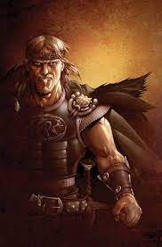

Beowulf
A hero, the strongest warrior who fights with three dragons. Danish king, son of Scyld. Beowulf represents a selfless warrior and hero intent on defeating evil and protecting the people while also being loyal to the king. Beowulf fought the monsters alone when he believed it was best to go it alone, even when he did not need weapons. Beowulf knew his powers had declined as a king, but he remained a brave protector who was well respected by the subjects. Beowulf is a heroic ideal, and the poem mentions warriors and heroes who are well respected in the poet’s imagined society as they are worthy of praise.